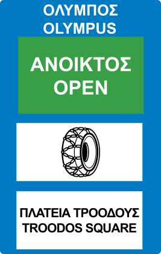

Loading...

Informatory sign for special messages. Section of road open or closed
ℹ Information Signs
📖 Description
This sign is used to display important road status information, such as whether a route is open, closed, or requires special equipment like snow chains. It is commonly used in mountainous areas or during severe weather.